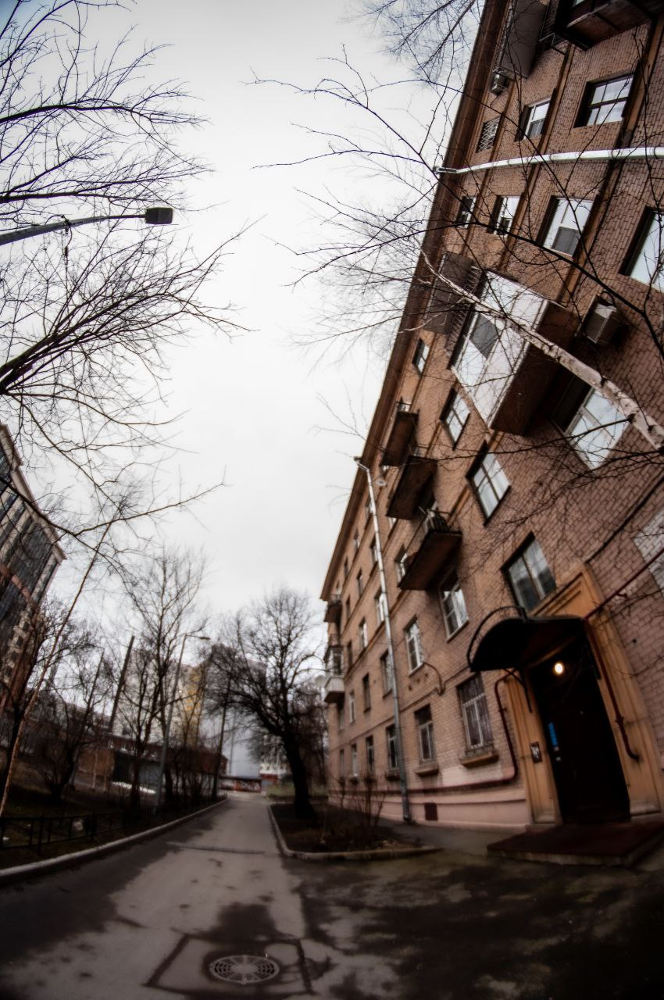

Объективы для портрета
Портретные объективы имеют фиксированное фокусное расстояние (например, 50 мм или 85 мм) и обеспечивают красивое размытие фона (боке).
Объективы для пейзажа
Широкоугольные объективы (например, 16-35 мм) идеально подходят для съемки пейзажей, так как они захватывают больше пространства.
Объективы для архитектуры
Тилт-шифт объективы используются для съемки архитектуры, чтобы избежать искажений.
